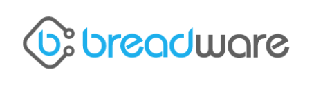

Dr. Dascalu is CS 426's main professor. He is well-versed in human-computering interaction which is very benefiical to Party Alert's application as it will be very user interactive.
Danny deLaveaga is the CEO and co-ownder of BreadWare, a start-up company in Reno, Nevada that specializes in making circuit chips and Internet of Things devices. BreadWare has graciously sponsered the Party Alert project by giving team members chips and an Electric Imp device to program.

Visit Breadware!